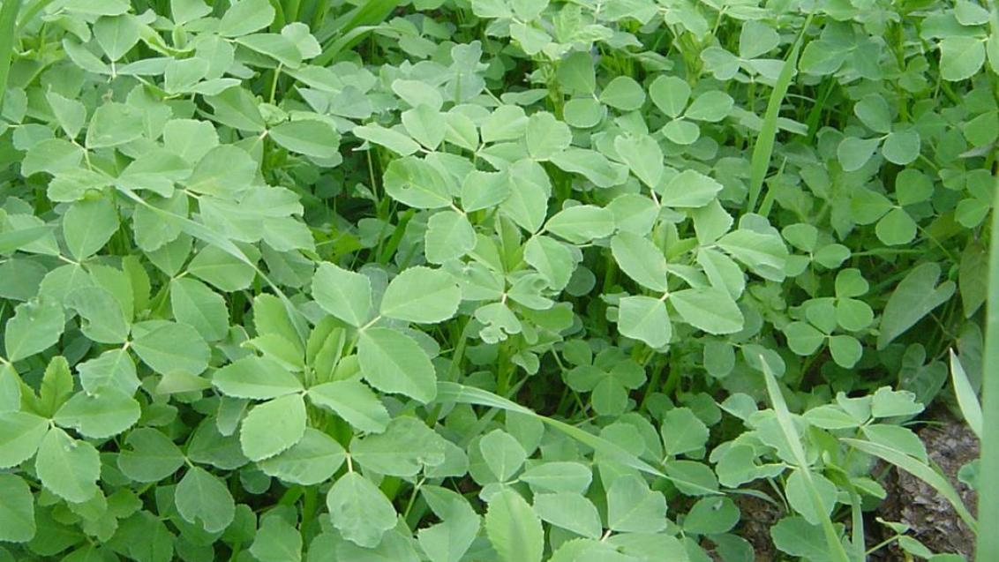

Ayuntamiento de Senés
JARDIN BOTANICO DE ESPECIES AUTOCTONAS DE SENES

Medicago sativa

La mierga (Medicago sativa), también conocida como alfalfa, es una planta herbácea perenne perteneciente a la familia de las leguminosas, ampliamente utilizada en agricultura por su alto valor nutritivo. Se caracteriza por su crecimiento vigoroso y su capacidad para regenerarse tras el corte.
Presenta tallos erectos y ramificados que pueden alcanzar hasta un metro de altura. Sus hojas son trifoliadas, de color verde intenso, y durante la floración produce pequeñas flores de tonalidad violeta o azulada agrupadas en racimos, que posteriormente dan lugar a frutos en forma de espiral.
La mierga es originaria de Asia occidental, pero se encuentra ampliamente distribuida en regiones templadas de todo el mundo debido a su cultivo agrícola. En el ámbito mediterráneo, es frecuente en campos de cultivo y zonas rurales.
La mierga es una planta de gran valor nutricional, rica en proteínas, vitaminas y minerales. Se utiliza principalmente como forraje para el ganado, aunque también posee propiedades beneficiosas para la salud en el ámbito de la fitoterapia.
La mierga simboliza la fertilidad y la productividad, al estar estrechamente vinculada a la agricultura y a la alimentación animal. Representa la riqueza del campo y el aprovechamiento de los recursos naturales.
En Senés, la mierga ha sido cultivada como forraje para todo tipo de animales, caballerías, hanadrías, cerdos, conejos y otro. Decían que era buena para mejorar artritis y artrosis, diurética y disolvente de calculos renales.
La mierga florece principalmente entre primavera y verano, produciendo flores que favorecen la actividad de insectos polinizadores en el entorno agrícola.
La mierga mejora la fertilidad del suelo gracias a su capacidad para fijar nitrógeno. Además, es una de las plantas forrajeras más importantes a nivel mundial.